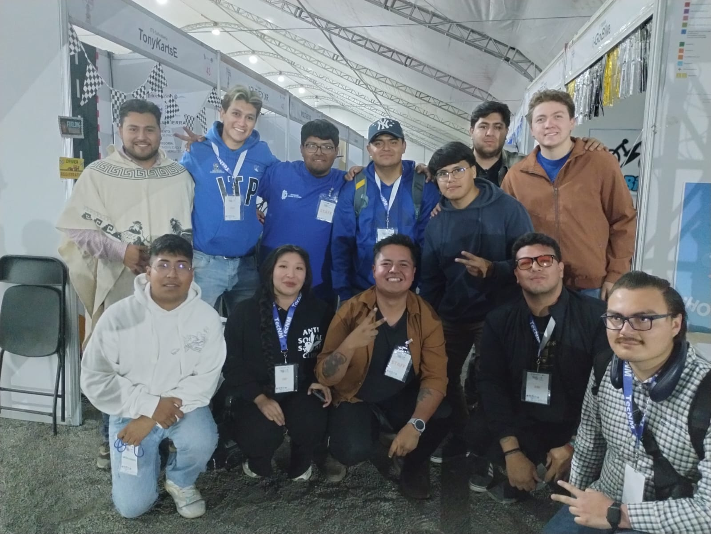
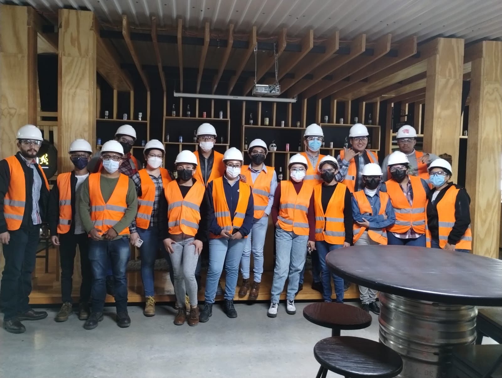
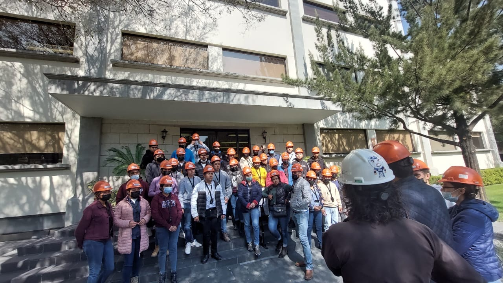
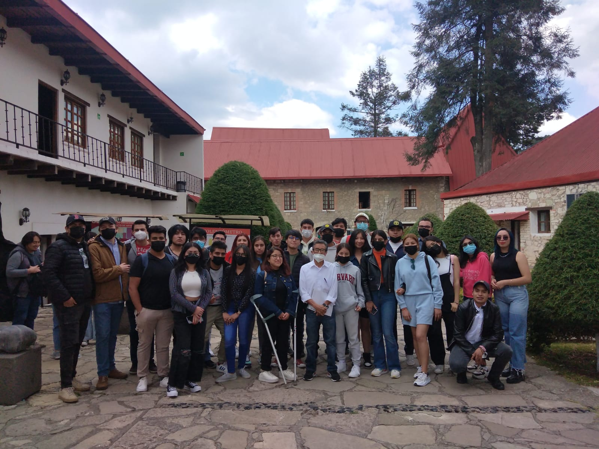
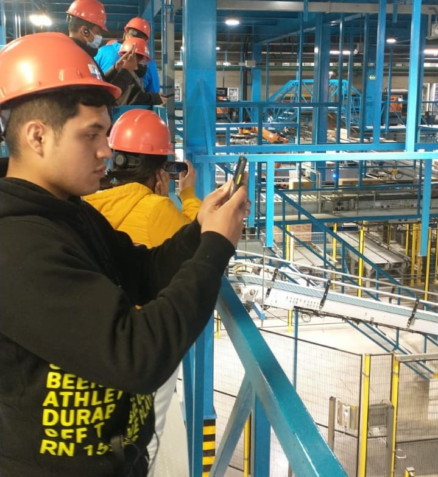

Visitas Industriales
Conoce de cerca el entorno industrial mediante visitas a empresas y actividades académicas que permiten relacionar la teoría con la práctica y fortalecer tu formación profesional.
Conoce de cerca el entorno industrial mediante visitas a empresas y actividades académicas que permiten relacionar la teoría con la práctica y fortalecer tu formación profesional.


Conoce procesos productivos, tecnologías, sistemas de calidad y modelos de gestión directamente dentro de empresas de distintos sectores industriales.

Aprende en escenarios reales. Relaciona los conocimientos adquiridos en clase con situaciones y procesos del entorno empresarial.

Acércate al mundo laboral. Fortalece tus habilidades y conoce las oportunidades profesionales que ofrece la Ingeniería Industrial.

Vive la experiencia industrial. Observa directamente el funcionamiento de las empresas y adquiere una visión práctica de tu futura profesión